From Government Policy to Ground Reality
Automatically cross-examining public road infrastructure schemes against contractor e-procurement progress logs and timestamped citizen grievance signals to flag emerging service failures and "Ghost Completions" with verifiable evidence dossiers.
Monitored Portfolio
60 Corridors
Across 6 Metros
Sanctioned Budget
₹34,149 Cr
NIP / State Sanctions
Ghost Completions
14 Flagged
Paper 100% != Reality
Milestone Slippages
9 Delayed
Delay Delta > 6 Months
Verified Clean
37 Clean
Low Defect Density
Geospatial Infrastructure Delivery Map
Interactive corridor GPS coordinates color-coded by AI audit risk
Priority Audit Cases
Corridors flagged by the Triangulation Anomaly Detector for immediate human field inspection.
Infrastructure Project Portfolio Records
Search and filter across public infrastructure corridors
Machine Learning Model Laboratory (12 Syllabus Algorithms)
Interactive and high-resolution visual evidence generated from the trained Machine Learning suite.
Gradient Descent Convergence
Batch vs Stochastic vs Mini-Batch GD
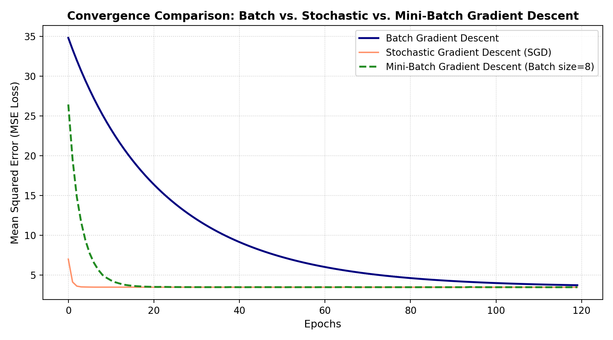
Polynomial Regression Fits
Underfitting (d=1) vs Overfitting (d=5)
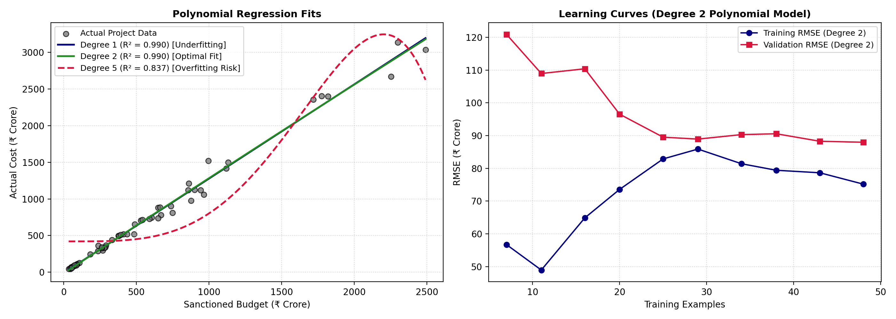
Ridge & Lasso Shrinkage Paths
Lasso Feature Selection to Exact 0
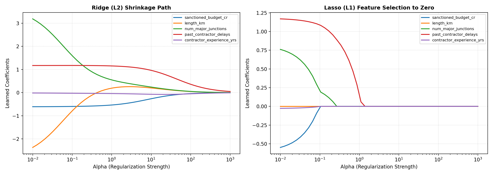
Logistic 2D Decision Boundary
Separating Hyperplane at P(y=1)=0.5
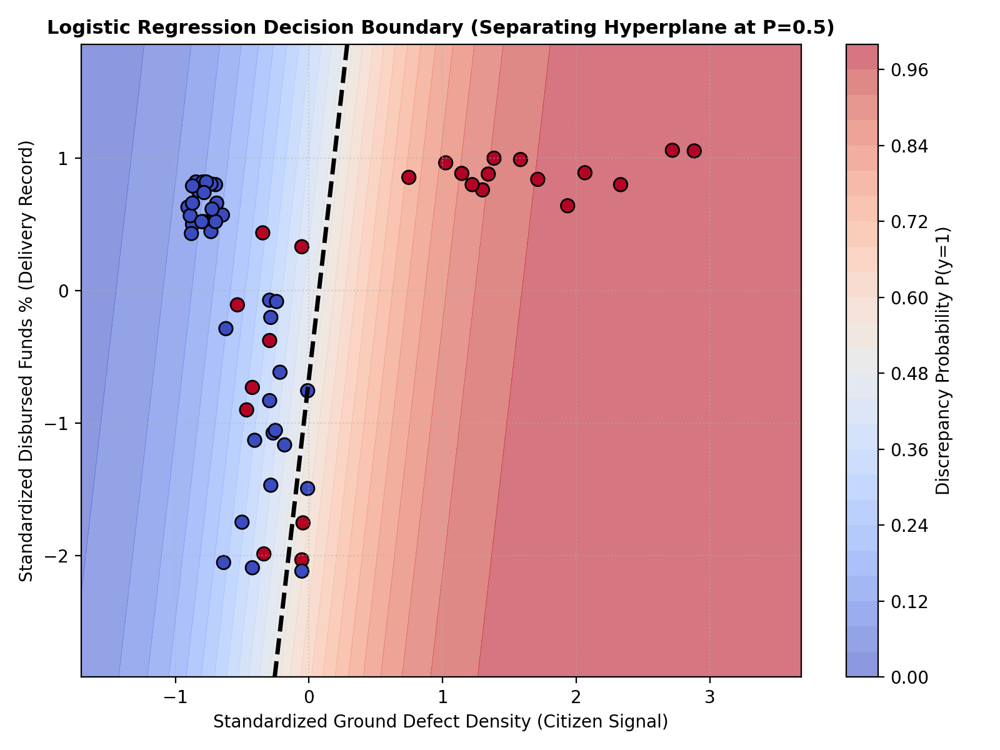
Naïve Bayes ROC & PR Curves
ROC-AUC 0.707 | Avg Precision 0.888
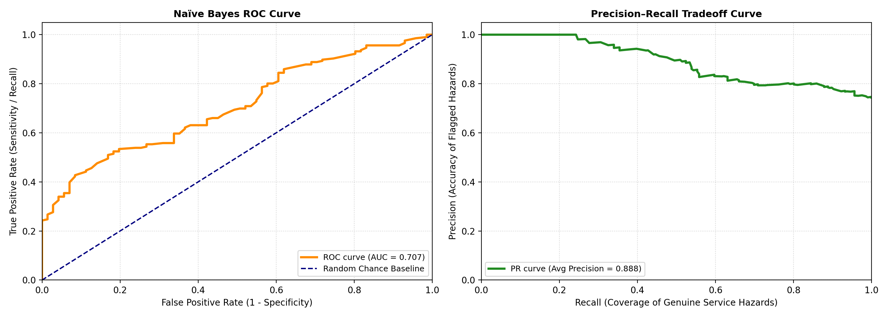
K-Means Spatial Hotspots
Elbow Curve & Silhouette Score (k=7)
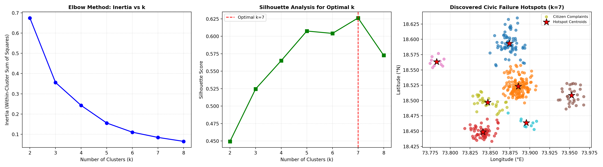
KNN on MNIST (10x10 Matrix)
98.44% Accuracy across 10 Digits
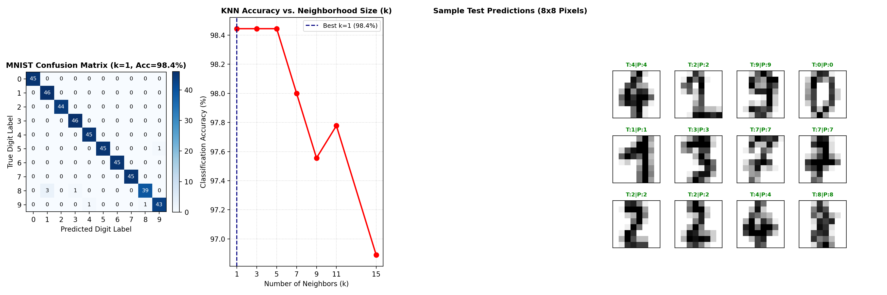
Linear vs Poly vs RBF Kernels
RBF Achieves 100% Separation
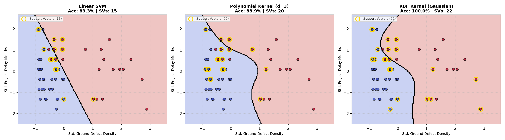
CART Tree: Gini vs Entropy
Human-Auditable Inspection Rules
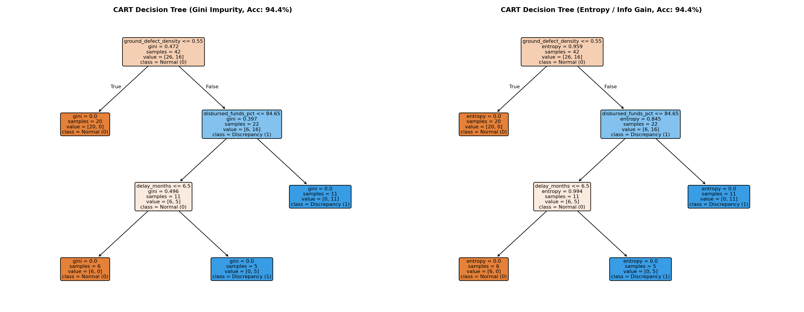
Random Forest Feature Ranking
Top Drivers: Defect Density & Complaints
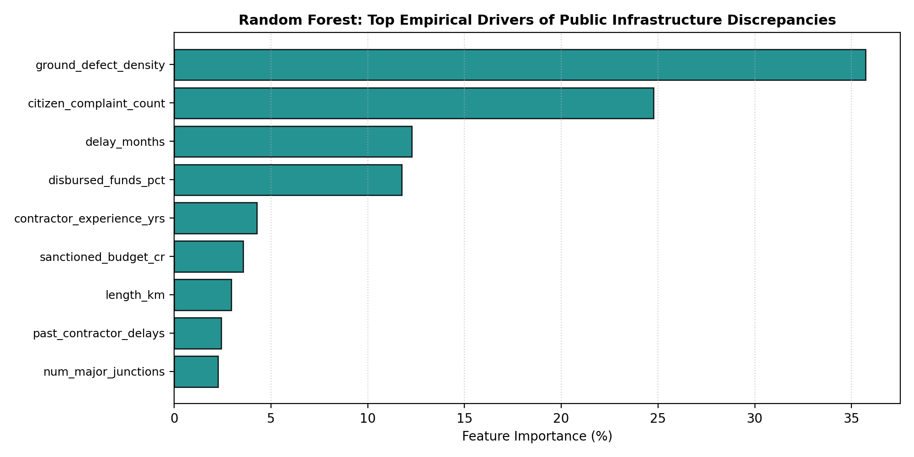
AdaBoost & Gradient Boosting
ROC-AUC: 0.981 vs Single Tree
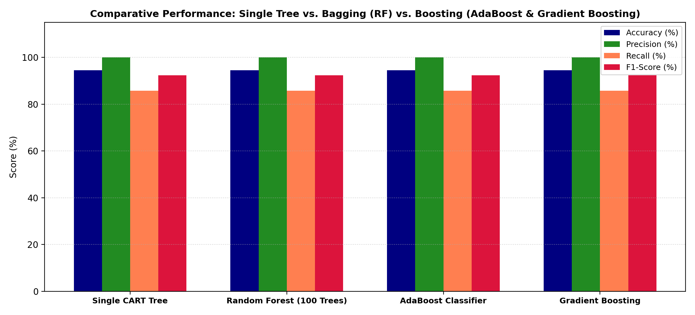